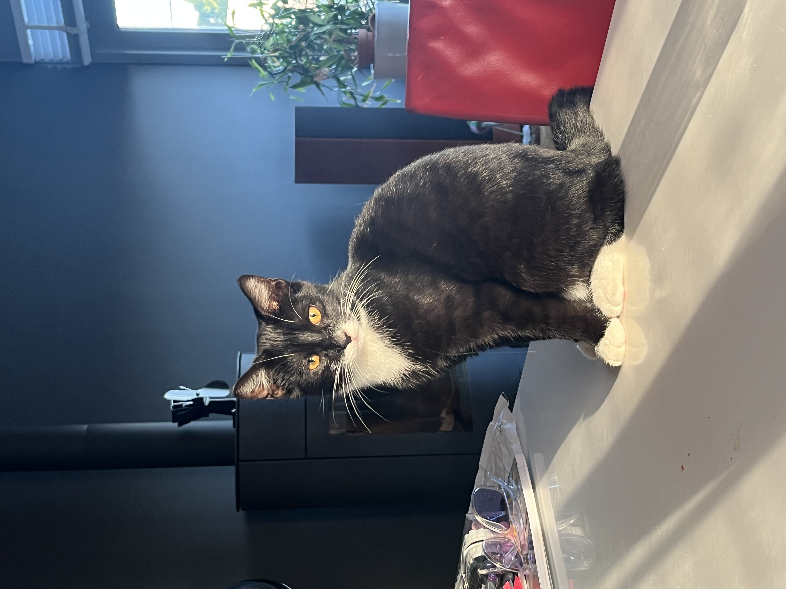
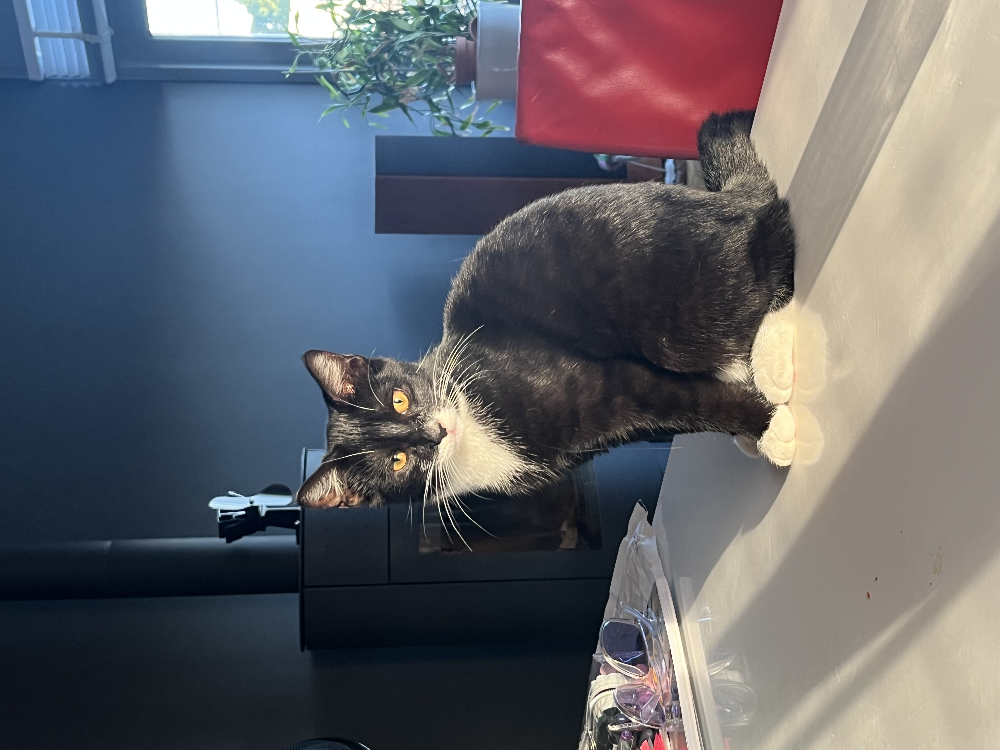
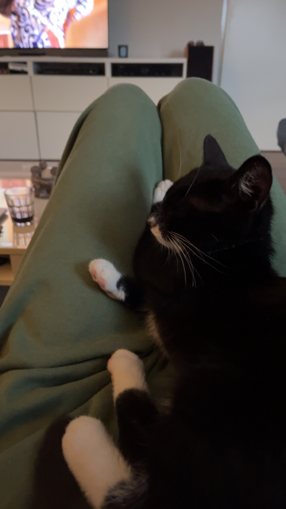
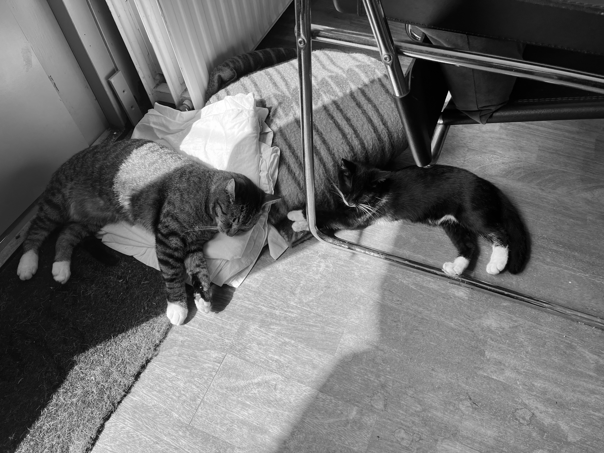

Snoes de ontdeugende poes
Snoes is een heel ontdeugend poesje. Ze eet van Maui zijn voer, ze gaat op tafel zitten (en andere plekken waar het niet mag). Snoes kan ook heel snel rennen. Probeer haar maar is bij te houden.
Snoes is een heel ontdeugend poesje. Ze eet van Maui zijn voer, ze gaat op tafel zitten (en andere plekken waar het niet mag). Snoes kan ook heel snel rennen. Probeer haar maar is bij te houden.
Snoes houd ook heel erg van bij je liggen. Als ik op de bank zit en druk bezig ben op mijn telefoon komt Snoes op mn schoot springen om bij mij te liggen. Meestal gaat ze dan helemaal naar je gezicht omdat ze aandacht van je wil. Maar als ze eenmaal bij je ligt is Snoes wel schattig.
Snoes vond het in het begin erg spannend bij ons en bij Maui. Maui hebben wij namelijk al best wel lang. Voor beide was het even wennen maar ze zijn snel aan elkaar gewend geraakt.
over de huisdieren die ik heb gehad. 